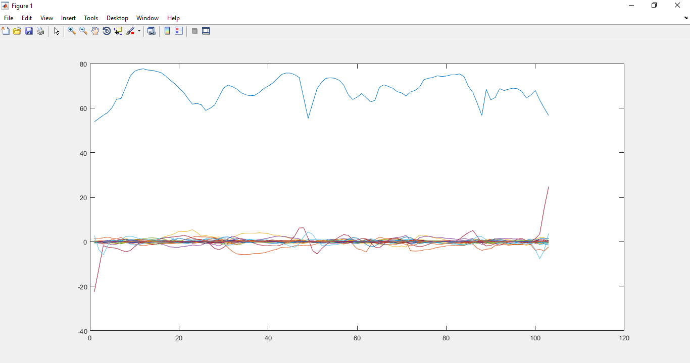
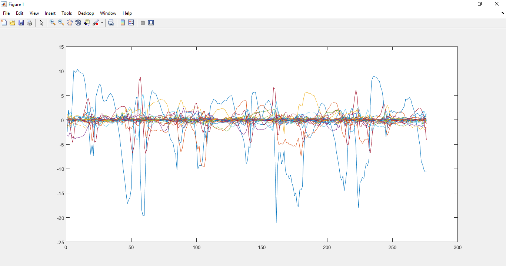
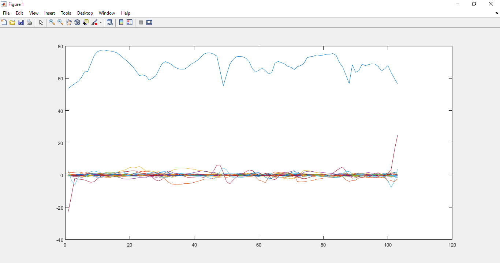
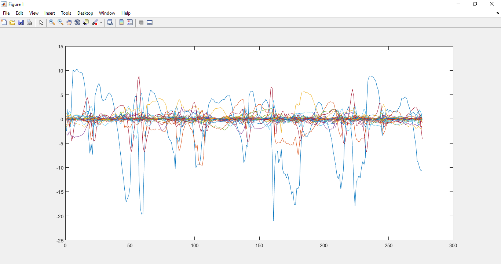
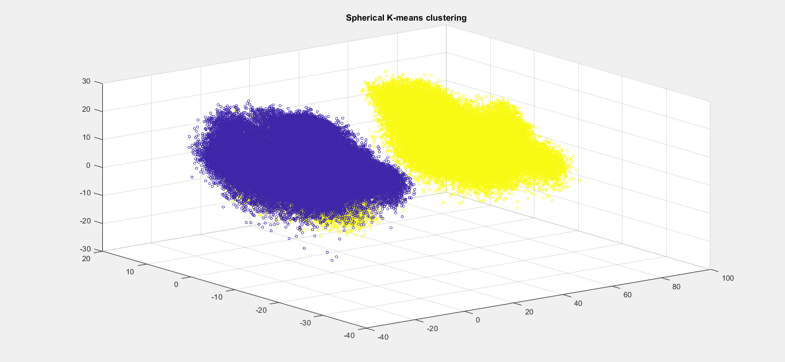
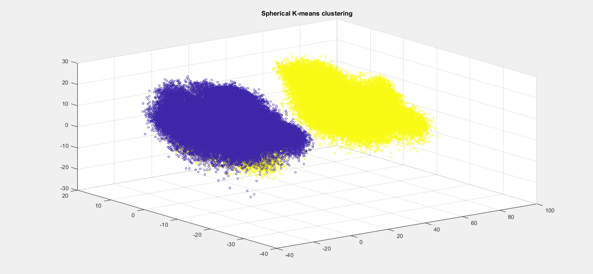

Gender Classification From Speech
Abstract
The primary aim of our project is to build Gender classification system based on the speech.The system includes feature extractor which extracts
MFCC(Mel Frequency Cepstral Coefficients) and we also extract delta coefficients,delta-delta coefficients from MFCC and generate a feature vector.Then we do spherical
k-means clustering and then we implement bag of words and then predict the gender.
1. Introduction
Speech is the most natural and efficient way of communication between humans.This project aims at classifying the gender from speech.The first step is to extract
feature from the audio data.One of the best features that are available with respect to the frequency of identifying gender is
MFCC (Mel Frequency Cepstral Coefficients).It is a non-parametric frequency domain approach, which is based on a human
auditory perception system.
1.1 Introduction to Problem
Human listeners are capable of extracting information from the accoustic signal beyond just the linguistic message like speakers personality, emotional state, gender
etc.. Our project aims at enabling the computer to classify the gender.
1.2 Figure

1.3 Literature Review
Gender recognition of speaker from speech has various potential applications.There are various publications targeting different set of
features and
using different methodologies for classification.For example in Sparse Estimation Technique, Auto-correlation function of speech is
extracted from
fundamental frequency which is used for identifying the gender.The reported recognition accuracy is 90 to 95%. But the fundamental
frequency extraction
may be difficult in case of noisy environment.In this situation more complex methods can be proposed to improve fundamental
frequency estimation.
In Mel Frequency CepstralCoefficients (MFCC), features are extracted for voiced vowels where the distinction of male/female
is most significant
& accuracy is better.
A robust gender detection system is developed by Zeng et al.The developed system has been tested for the noisy environment, and dependency of the language is also considered for the evaluation of the system. The obtained accuracy is 95%,which shows the robustness of the developed system against noise. The experiment shows that the system is independent of language as well.Relative spectral PLP features and pitch of the male and female speakers are used for gender detection. Chen et al. proposed a gender detection system for children of two age groups of 8-9 years and 16-17 years. The obtained accuracies are 60% and 94%, respectively, for two age groups. Different acoustic features, source spectral magnitude, cepstral peak prominence, and harmonic-to-noise ratio, are used to implement the system. Sedaaghi conducted comparative study for the gender detection by using two different databases. Various classifiers and acoustic features are used for gender classification system, and the best reported accuracy is 95%. A total of 113 features are used in the study and Bayes classifier is used for feature selection. An automatic gender detection system for Hindi speech is developed by using MFCC as features and Euclidean distance as a classification method. The authors have mentioned in this study that the same features can be used for gender and speech recognition.However,use of same features for both recognition systems cannot guarantee good performance.
A robust gender detection system is developed by Zeng et al.The developed system has been tested for the noisy environment, and dependency of the language is also considered for the evaluation of the system. The obtained accuracy is 95%,which shows the robustness of the developed system against noise. The experiment shows that the system is independent of language as well.Relative spectral PLP features and pitch of the male and female speakers are used for gender detection. Chen et al. proposed a gender detection system for children of two age groups of 8-9 years and 16-17 years. The obtained accuracies are 60% and 94%, respectively, for two age groups. Different acoustic features, source spectral magnitude, cepstral peak prominence, and harmonic-to-noise ratio, are used to implement the system. Sedaaghi conducted comparative study for the gender detection by using two different databases. Various classifiers and acoustic features are used for gender classification system, and the best reported accuracy is 95%. A total of 113 features are used in the study and Bayes classifier is used for feature selection. An automatic gender detection system for Hindi speech is developed by using MFCC as features and Euclidean distance as a classification method. The authors have mentioned in this study that the same features can be used for gender and speech recognition.However,use of same features for both recognition systems cannot guarantee good performance.
1.4 Proposed Approach
The Proposed approach for this Project is first to extract the MFCCs(mel frequency cepstral coefficients) and next we have to compute the Delta coefficients,Delta-Delta coefficients from the MFCCs.Now we make a feature vector comprising of all the above coefficients and now we fed it to the Sperical K-means clusturing algorithem.We also computed bagofwords which is computed by using training datasets of male and female by clusturing them.
2. Proposed Approach
The approach used here to build Gender classification speech are
2.1 Feature Extraction
We extracted MFCCs and also Delta MFCCs ,Delta-Delta MFCCs from MFCC.
Male MFCC figure  Female MFCC figure 
Male MFCC figure  Female MFCC figure 
2.2 Clusturing
We used Bag of words technique by doing sperical k-means clusturing for whole sample.
Sperichal k-means clusturing showing 2 clusters

Sperichal k-means clusturing showing 2 clusters

3. Experiments & Results
3.1 Dataset Description
We have taken a DATASET which contains a test dataset and a training dataset with both male and female speech samples.
3.2 Project Code
The code for the Whole project can be found from the Github Repository.
3.3 Discussion
Firstly, we start the discussion of how we start the project? We have looked upon the internet to find the ways to classify the gender. We have many ideas like MFCCS, short term energies, pitch etc.. but we finally opted to use MFCC because by using MFCC we can get the result with much better accuracy. Now our aim is to write the code in much simpler way with least number of lines possible and we understand that the use functions can help us with that. The Functions which we defined for this Project are mfcc_r, frames_window_r, trifilter_r, deltamfcc, lab_s, normalize_norm_mean, normalize_norm, SPKmean.
The Function mfcc_r generates the MFCCs of the given audio sample. Before giving input audio sample to mfcc_r ,the parts which having amplitude less than 0.1 (arbitrarily chosen by observing audio samples) are eliminated. mfcc_r uses to other functions for framing and windowing (frames_window_r) and to increase the amplitudes we will use triangular filter bank(trifilter_r). This function firstly, starts by checking whether the given inputs are correct and if all given required inputs are given, if not it terminates the whole algorithm. Secondly, it converts the given inputs frame shift and frame duration into samples and finds the length of the FFT required based on the sampled frame duration samples. Thirdly, it does pre-emphasis and later speech is framed and windowed(frames_window_r). Fourthly, it does FFT for each frames and next we multiply with triangular filter bank(trifilter_r), so that along with the amplitudes, the difference between higher and lower amplitudes gets amplified too. Next, we convert to mel-scale because mel-scale converts the input into a scale which computer understands as the human voices differentiating from environmental voices. Finally, we do the Discrete cosine transform and we limit the coefficients to 13 because in general 13 coefficients are required to classify gender. These coefficients are called mel-frequency cepstral coefficients(MFCC).
We extract deltamfcc coefficients and delta-deltamfc coefficients by giving MFCC input to function (deltamfcc). we computed MFCC, deltamfcc, delta-deltamfcc .and then we append them horizontally making a feature vector comprising all the above mentioned coefficients. Now we use the Bag-of-words technique to make the whole training data feature vectors into 2 clusters by the use of Spherical k-means clustering and later we find the mean of the whole male data samples feature vectors and also for female data samples. we found out the cluster1 mean is almost close to female data mean and cluster 2 mean is closer to male data mean. So now we consider cluster1 as female and cluster2 as male.
We take these two cluster means generated for whole data samples of male and female and compare the test data samples by using function lab_s which gives the output percentage of male and percentage of female in the gives test sample and finally outputs male or female by comparing the percentages.
The whole functions runs in the following matlab codes gclass_r – used to generate the feature vector for single sample, train_r.m – used to generate the feature vector for whole training data samples, SPK_m – used to do spherical k means clustering, test_dm runs the whole male data samples, test_df runs for whole female data samples. We finally find out the gender.
The Function mfcc_r generates the MFCCs of the given audio sample. Before giving input audio sample to mfcc_r ,the parts which having amplitude less than 0.1 (arbitrarily chosen by observing audio samples) are eliminated. mfcc_r uses to other functions for framing and windowing (frames_window_r) and to increase the amplitudes we will use triangular filter bank(trifilter_r). This function firstly, starts by checking whether the given inputs are correct and if all given required inputs are given, if not it terminates the whole algorithm. Secondly, it converts the given inputs frame shift and frame duration into samples and finds the length of the FFT required based on the sampled frame duration samples. Thirdly, it does pre-emphasis and later speech is framed and windowed(frames_window_r). Fourthly, it does FFT for each frames and next we multiply with triangular filter bank(trifilter_r), so that along with the amplitudes, the difference between higher and lower amplitudes gets amplified too. Next, we convert to mel-scale because mel-scale converts the input into a scale which computer understands as the human voices differentiating from environmental voices. Finally, we do the Discrete cosine transform and we limit the coefficients to 13 because in general 13 coefficients are required to classify gender. These coefficients are called mel-frequency cepstral coefficients(MFCC).
We extract deltamfcc coefficients and delta-deltamfc coefficients by giving MFCC input to function (deltamfcc). we computed MFCC, deltamfcc, delta-deltamfcc .and then we append them horizontally making a feature vector comprising all the above mentioned coefficients. Now we use the Bag-of-words technique to make the whole training data feature vectors into 2 clusters by the use of Spherical k-means clustering and later we find the mean of the whole male data samples feature vectors and also for female data samples. we found out the cluster1 mean is almost close to female data mean and cluster 2 mean is closer to male data mean. So now we consider cluster1 as female and cluster2 as male.
We take these two cluster means generated for whole data samples of male and female and compare the test data samples by using function lab_s which gives the output percentage of male and percentage of female in the gives test sample and finally outputs male or female by comparing the percentages.
The whole functions runs in the following matlab codes gclass_r – used to generate the feature vector for single sample, train_r.m – used to generate the feature vector for whole training data samples, SPK_m – used to do spherical k means clustering, test_dm runs the whole male data samples, test_df runs for whole female data samples. We finally find out the gender.
4. Conclusions
4.1 Summary
The approach we followed is based on Supervised learning. we have extracted MFCC, Delta MFCC, Delta-Delta MFCC vectors for the trianing data sets for both male and
female. Then we have used Spherical K-Means algorithm to which we feed both male and female training data sets and generate 2 clusters. The clusters of male and female
or otherwise the bag of words are recognized by comparing them to the means generated from male and female training sets seperately. Next we will feed the test datasets
of male and female and compare each column vector with column vectors of means from the bag of words which then decides the gender.
4.2 Future Extensions
1) We can increase accuarcy by giving more samples in the training data set.
2) We can improve the algorithm to predict the gender when both male and female are given at a time.
3) We can decrease the error probability and also increase the predicatability even in the presence of noise.
2) We can improve the algorithm to predict the gender when both male and female are given at a time.
3) We can decrease the error probability and also increase the predicatability even in the presence of noise.
5.References
[1] Audio Signal Classification, Hariharan Subramanian.
[2] Gender Classification by Speech Analysis, BhagyaLaxmi Jena.
[3] Voice Recognition Using MFCC Algorithm, IJIRAE.
[4] Practical Cryptography.
[5] Speech Signal Representation, MIT.
[6] Vector Quantization and Clustering, MIT.
[7] An Approach to Extract Feature using MFCC,Parwinder Pal Singh, Pushpa Rani.
[8] Gender Identification Using A General Audio Classifier, Hadi Harb, Liming Chen.
[9] Analysis and prediction of acoustic speech features from mel-frequency cepstral coefficients in distributed speech recognition architectures, Jonathan Darch and Ben Milner.
[2] Gender Classification by Speech Analysis, BhagyaLaxmi Jena.
[3] Voice Recognition Using MFCC Algorithm, IJIRAE.
[4] Practical Cryptography.
[5] Speech Signal Representation, MIT.
[6] Vector Quantization and Clustering, MIT.
[7] An Approach to Extract Feature using MFCC,Parwinder Pal Singh, Pushpa Rani.
[8] Gender Identification Using A General Audio Classifier, Hadi Harb, Liming Chen.
[9] Analysis and prediction of acoustic speech features from mel-frequency cepstral coefficients in distributed speech recognition architectures, Jonathan Darch and Ben Milner.